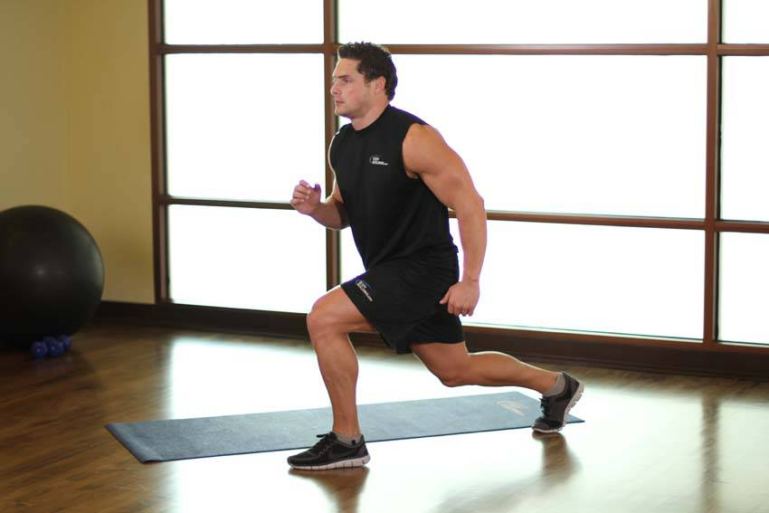

- Being in a standing position. Jump into a split leg position, with one leg forward and one leg back, flexing the knees and lowering your hips slightly as you do so.
- As you descend, immediately reverse direction, standing back up and jumping, reversing the position of your legs. Repeat 5-10 times on each leg.